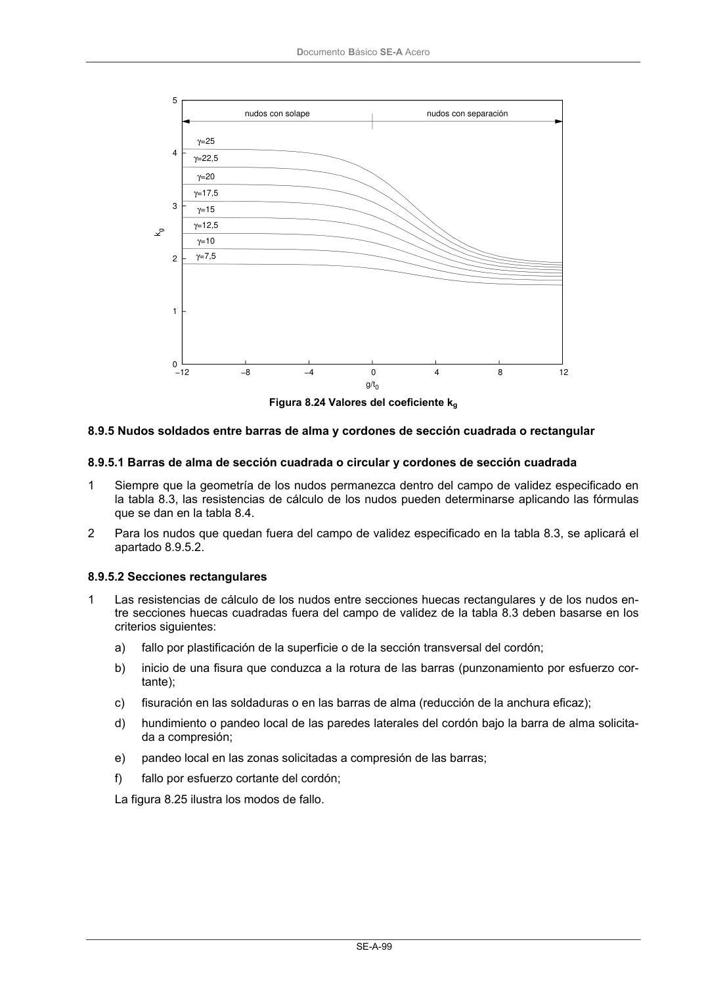

DB-SE-A Acero · edición 2007-10-23 · capa oficial
Documento DB-SE-A-oficial · SHA-256 del PDF 9ed9ea694aabfbda3bfbbef40dfe9223fde05d13c35bc2ba9751e5a96a22a64f
Página física 101 de 168.
Copia fiel del PDF fuente · Fuente oficial
Ficha de la disposición en la fuente oficial
Formato: Texto de la página (Markdown)
Documento Básico SE-A Acero SE-A-99 0 1 2 3 4 5 −12 −8 −4 0 4 8 12 kg g/t0 nudos con solape nudos con separación γ=7,5 γ=10 γ=12,5 γ=15 γ=17,5 γ=20 γ=22,5 γ=25 Figura 8.24 Valores del coeficiente kg 8.9.5 Nudos soldados entre barras de alma y cordones de sección cuadrada o rectangular 8.9.5.1 Barras de alma de sección cuadrada o circular y cordones de sección cuadrada 1 Siempre que la geometría de los nudos permanezca dentro del campo de validez especificado en la tabla 8.3, las resistencias de cálculo de los nudos pueden determinarse aplicando las fórmulas que se dan en la tabla 8.4. 2 Para los nudos que quedan fuera del campo de validez especificado en la tabla 8.3, se aplicará el apartado 8.9.5.2. 8.9.5.2 Secciones rectangulares 1 Las resistencias de cálculo de los nudos entre secciones huecas rectangulares y de los nudos en- tre secciones huecas cuadradas fuera del campo de validez de la tabla 8.3 deben basarse en los criterios siguientes: a) fallo por plastificación de la superficie o de la sección transversal del cordón; b) inicio de una fisura que conduzca a la rotura de las barras (punzonamiento por esfuerzo cor- tante); c) fisuración en las soldaduras o en las barras de alma (reducción de la anchura eficaz); d) hundimiento o pandeo local de las paredes laterales del cordón bajo la barra de alma solicita- da a compresión; e) pandeo local en las zonas solicitadas a compresión de las barras; f) fallo por esfuerzo cortante del cordón; La figura 8.25 ilustra los modos de fallo.
